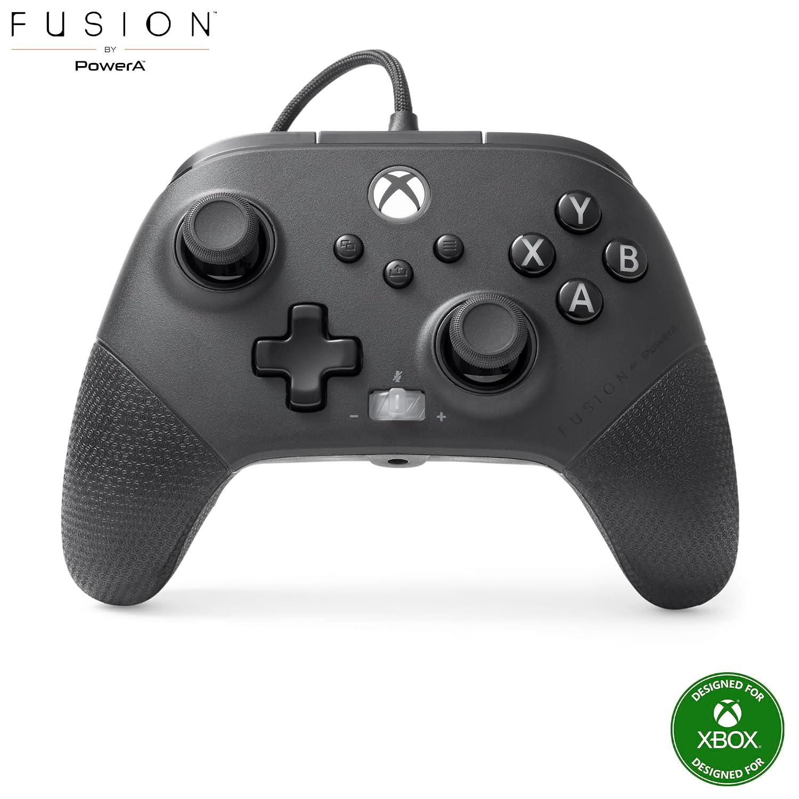
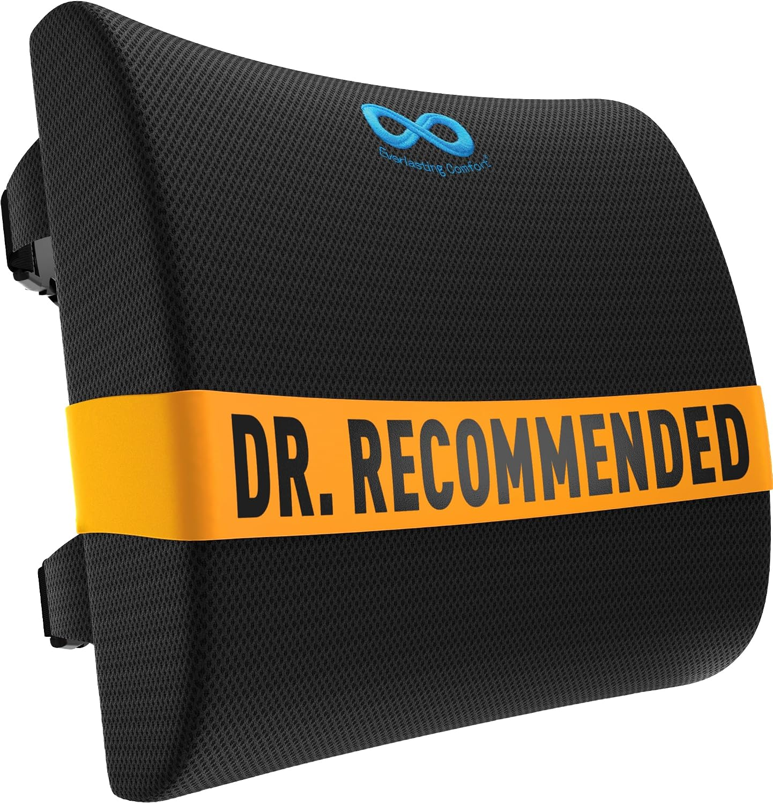
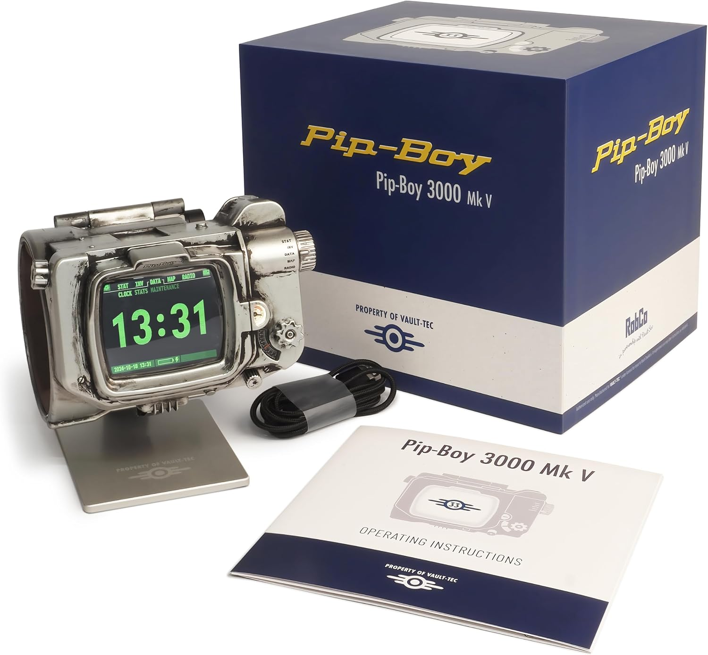

Open-world RPGs like Fallout ask for a different kind of setup than a twitchy competitive shooter. You're spending 80+ hours in one save file, digging through menus, managing inventory, and exploring at a slower pace — so comfort, controller feel, and long-session ergonomics matter more here than raw reaction-time gear.
These picks are for the specific pain points of the genre: inventory-menu fatigue, long-session comfort, and the very real desire to own something that looks like it belongs on a shelf next to the game itself.
Controller upgrades that actually matter for RPGs
You're not flick-shotting in Fallout. You're navigating deep menus and holding directional inputs for extended exploration. A controller with textured grips and back paddles for remapping inventory shortcuts saves real wrist strain over a long session.

Textured-Grip Controller with Remappable Paddles
Two remappable back paddles let you bind the Pip-Boy/inventory shortcut and a quick-heal item without taking a thumb off the stick — a genuinely useful convenience in a menu-heavy game.
Pricing and availability via the Amazon Associates program — prices shown are estimates and may vary.
Comfort for the long haul
An 80-hour save file means an 80-hour relationship with your seating. A controller stand and a supportive chair cushion aren't glamorous purchases, but they're the difference between finishing the main questline and giving up around hour 30 because your back hurts.

Ergonomic Lumbar Support Cushion
Memory foam lumbar support that straps to almost any chair. A small purchase that pays off the moment you realize you've been sitting for three hours straight looting a raider camp.
Pricing and availability via the Amazon Associates program — prices shown are estimates and may vary.
For the collector shelf
If you're the type who wants a physical reminder of the wasteland on your desk, a well-made replica or collector's item is worth the splurge — just make sure it's officially licensed, since this franchise in particular attracts a lot of low-quality knockoff replicas.

Wrist Device Replica with Light-Up Display
A light-up display and sound effects module make this a genuine display centerpiece, not a static prop. Pairs well with the collectible display habits we cover in our Star Wars collectibles guide if you're building out a full shelf.
Pricing and availability via the Amazon Associates program — prices shown are estimates and may vary.
Storage for a save file that grows forever
Open-world RPGs with heavy modding communities or large day-one patches can eat through console storage fast. An external SSD is one of the highest-value upgrades for this genre specifically, since load times on an external SSD versus the stock internal drive can be the difference between a five-second fast-travel load and a twenty-second one — multiplied across dozens of hours, that adds up to real time saved.
Double-check read/write speed requirements for your specific console generation before buying — older external drive standards can bottleneck load times on newer consoles even if the drive itself is otherwise fine, which defeats the purpose of the upgrade entirely.
Mapping and note-taking for complex quest lines
Open-world RPGs with sprawling side quest webs benefit from external note-taking more than almost any other genre — quest markers alone don't always capture which NPC said what, or which of three morally ambiguous choices you're leaning toward. A simple notebook next to your setup, or a notes app on a second screen, prevents the very real problem of forgetting quest context after taking a week off from a save file.
Bottom line: Prioritize the comfort accessories first — they pay off every single session, while the collector's item is a one-time joy purchase. Get both if the budget allows, but don't skip the cushion to afford the replica.